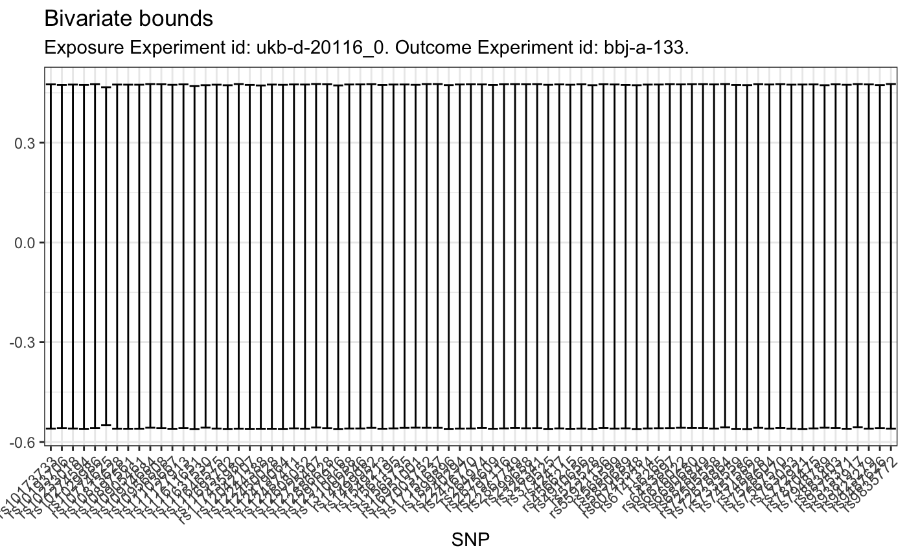
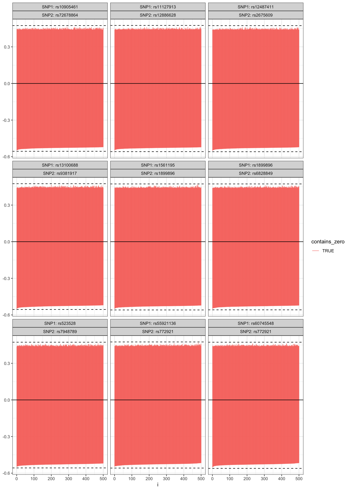

Example Analysis of Data from the IEU GWAS Database
Source:vignettes/example_analysis_2.Rmd
example_analysis_2.RmdExample Analysis
Here, we will use smoking as exposure, and depression as outcome (both as binary).
library(TwoSampleMR)
## TwoSampleMR version 0.5.4
## [>] All datasets re-instated
## [>] New: Option to use non-European LD reference panels for clumping etc
## [>] See news(package='TwoSampleMR') and https://gwas.mrcieu.ac.uk for latest information##
## Warning:
## You are running an old version of the TwoSampleMR package.
## This version: 0.5.4
## Latest version: 0.5.5
## Please consider updating using devtools::install_github('MRCIEU/TwoSampleMR')library(tidyverse)
## ── Attaching packages ────────────────────────────────────────────────────── tidyverse 1.3.0 ──## ✓ ggplot2 3.3.2 ✓ purrr 0.3.4
## ✓ tibble 3.0.3 ✓ dplyr 1.0.1
## ✓ tidyr 1.1.1 ✓ stringr 1.4.0
## ✓ readr 1.3.1 ✓ forcats 0.5.0## ── Conflicts ───────────────────────────────────────────────────────── tidyverse_conflicts() ──
## x dplyr::filter() masks stats::filter()
## x dplyr::lag() masks stats::lag()library(magrittr)
##
## Attaching package: 'magrittr'## The following object is masked from 'package:purrr':
##
## set_names## The following object is masked from 'package:tidyr':
##
## extractlibrary(ACEBounds) run_mono <- FALSE
Using the TwoSampleMR package, we get the data from the online database. First, we get a tibble with all available outcomes.
ao <- available_outcomes()
## API: public: http://gwas-api.mrcieu.ac.uk/From this, we identify an experiment. The ID is saved to the object exposure_id, and information about the study is saved to the exposure_experiment object.
exposure_id <- "ukb-d-20116_0" exposure_experiment <- ao %>% filter(id == exposure_id)
Next, we obtain potential instruments for the exposure variable.
exposure_dat <- extract_instruments(exposure_id)
Similarly, we obtain outcome data: identify an appropriate study, save the ID to outcome_id and information to outcome_experiment.
outcome_id <- "ukb-d-20544_11" # Depression outcome_id <- "bbj-a-133" # "ieu-a-966" # Lung Cancer outcome_experiment <- ao %>% filter(id == outcome_id)
Finally, we extract data from the study.
outcome_dat <- extract_outcome_data(snps = exposure_dat$SNP, outcomes = outcome_id)
## Extracting data for 84 SNP(s) from 1 GWAS(s)## Finding proxies for 11 SNPs in outcome bbj-a-133## Extracting data for 11 SNP(s) from 1 GWAS(s)Data is then harmonized.
dat <- harmonise_data(exposure_dat, outcome_dat) %>% as_tibble()
## Harmonising Smoking status: Never || id:ukb-d-20116_0 (ukb-d-20116_0) and Lung cancer || id:bbj-a-133 (bbj-a-133)## Removing the following SNPs for being palindromic with intermediate allele frequencies:
## rs11693702, rs1492546, rs2240294, rs264974, rs568599Since the results reported to the database do not include \(P(Y = 1 | Z = z)\) and \(P(X = 1 | Z = z)\), we need to reconstruct those. To do so, we first need to find \(P(Y = 1)\) and \(P(X = 1)\):
pop_probs <- tibble(regression = c("outcome", "exposure"), p_outcome = c(outcome_experiment %$% { ncase / (ncase + ncontrol) }, exposure_experiment %$% { ncase / (ncase + ncontrol) }))
The following helper function takes finds the intercept in logistic regression that ensures the marginal probabilities \(P(Y = 1)\) and \(P(X = 1)\) match what’s observed.
find_intercept <- function(beta1, p_outcome, pz, interval = c(-5, 5), zs = 0:2){ uniroot(f = function(beta0) sum((1+exp(-beta0-beta1*zs))^(-1) * pz) - p_outcome, interval = interval) }
Next, we need \(P(Z = z)\). These can be found from the allele frequencies. Since we have data on \(Z\) from two separate sources, and the allele frequencies vary ever so slightly between the two, we use a weighted average of the allele frequencies as our final estimates. With these estimated allele frequencies, we can find \(P(Z = z)\).
prep_for_bounds <- dat %>% rowwise() %>% mutate(samplesize.exposure = if_else(is.na(samplesize.exposure), exposure_experiment$ncase + exposure_experiment$ncontrol, as.integer(samplesize.exposure)), samplesize.outcome = if_else(is.na(samplesize.outcome), outcome_experiment$ncase + outcome_experiment$ncontrol, as.integer(samplesize.outcome)), ave_eaf = weighted.mean(x = c_across(c(eaf.exposure, eaf.outcome)), w = c_across(c(samplesize.exposure, samplesize.outcome)))) %>% select(SNP, contains("beta"), ave_eaf) %>% pivot_longer(contains("beta")) %>% separate(name, into = c("variable", "regression"), sep = "\\.") %>% pivot_wider(names_from = variable, values_from = value) %>% mutate(`P(Z = 2)` = (1 - ave_eaf)^2, `P(Z = 1)` = 2*ave_eaf*(1 - ave_eaf), `P(Z = 0)` = ave_eaf^2)
We add the values of \(P(X = 1)\) and \(P(Y = 1)\) to the tibble, and can now use the helper function defined above to find the intercepts that matches with the marginals.
prep_for_bounds_w_intercept <- prep_for_bounds %>% left_join(pop_probs) %>% rowwise() %>% mutate(find_intercept = list(find_intercept(beta1 = beta, p_outcome = p_outcome, pz = c(`P(Z = 0)`, `P(Z = 1)`, `P(Z = 2)`), interval = c(-7,7))), beta0 = find_intercept$root, `thetas/gammas` = list(1/(1+exp(-beta0 - 0:2*beta))))
## Joining, by = "regression"Finally, we calculate the bounds (both with and without assuming monotonicity of \(P(X = 1 | Z = z)\)) using the get_bounds() function.
bounds <- prep_for_bounds_w_intercept %>% select(-find_intercept, -beta0, -beta, -p_outcome, -ave_eaf) %>% mutate(regression = if_else(regression == "outcome", "gammas", "thetas")) %>% pivot_wider(names_from = regression, values_from = `thetas/gammas`) %>% rowwise() %>% mutate(bivariate_bounds = list(get_bounds(thetas = thetas, gammas = gammas, stop = FALSE, warning = FALSE)), interval = list(bivariate_bounds$interval), constraints_violated = bivariate_bounds$constraints_violated, bivariate_bounds_mono = list(get_bounds(thetas = thetas, gammas = gammas, stop = FALSE, warning = FALSE, x_mono = TRUE)), interval_mono = list(bivariate_bounds_mono$interval), constraints_violated_mono = bivariate_bounds_mono$constraints_violated) %>% ungroup() %>% unnest_wider(col = interval_mono) %>% rename(upper_mono = upper, lower_mono = lower) %>% unnest_wider(interval)
The bivariate bounds obtained from the 77 SNPs are shown on the following plot. As can be seen, none of the bounds provide much information at all, and all intervals are rather wide.
all_bivariate_bounds <- bounds %>% arrange(lower) %>% ggplot(aes(x = SNP)) + geom_errorbar(aes(ymax = upper, ymin = lower)) + theme_bw() + theme(axis.text.x = element_text(angle = 45, hjust = 1)) + labs(title = "Bivariate bounds", subtitle = paste0("Exposure Experiment id: ", exposure_id, ". ", "Outcome Experiment id: ", outcome_id, ".")) all_bivariate_bounds

Random Sampling of Potential Joint Distributions
To try to squeeze more information out of the data at hand, we try to randomly sample distributions \(P(Y = y, X = x | Z = z)\) that match the marginals we have, and don’t violate the IV model.
Using the function potential_covs(), we get constraints on the values of \(\text{Cov}(X,Y | Z = z)\). Feeding these constraints to sample_joint_probs(), we sample \(500\) joint distributions for each SNP.
filename <- paste0("samples_of_joints_", exposure_id, "_", outcome_id, ".Rds") if(file.exists(here::here("vignettes_data/example_analyses", filename))){ samples_of_joints <- read_rds(here::here("vignettes_data/example_analyses", filename)) } else { samples_of_joints <- bounds %>% rowwise() %>% mutate(pot_covs = list(potential_covs(thetas = thetas, gammas = gammas)), sample_joint = list(sample_joint_probs(pot_covs, n = 500, return_bounds = TRUE))) write_rds(samples_of_joints, here::here("vignettes_data/example_analyses", filename)) }
We do some expanding to expose the bounds from these joint distributions.
trivariate_bounds <- samples_of_joints %>% ungroup() %>% select(SNP, bivariate_lower = lower, bivariate_upper = upper, sample_joint) %>% unnest(sample_joint) %>% unnest(joint) %>% unnest_wider(bounds) %>% mutate(contains_zero = lower < 0 & upper > 0)
The plot below shows all bounds obtained from sampled joint distributions along with the original bivariate bounds. In this particular example, having a dataset with observations of \((X,Y,Z)\) would not provide much more information. There seems to be essentially no setting where the IV model holds, the marginals we observe are correct, AND the joint distribution would allow to determine direction of the ACE.
individual_SNPs_plot <- trivariate_bounds %>% group_by(SNP) %>% arrange(lower) %>% mutate(id = row_number()) %>% ungroup() %>% ggplot(aes(x = id)) + geom_hline(aes(yintercept = bivariate_lower), linetype = "dashed") + geom_hline(aes(yintercept = bivariate_upper), linetype = "dashed") + geom_hline(yintercept = 0) + geom_errorbar(aes(ymin = lower, ymax = upper, color = contains_zero)) + facet_wrap(~SNP, nrow = 7) individual_SNPs_plot

Below is a similar plot where we assume monotonicity of \(P(X = 1 | Z = z)\). This is only done in cases where the marginals are such that the bivariate constraints are not violated.
filename_mono <- paste0("samples_of_joints_mono_", exposure_id, "_", outcome_id, ".Rds") if(file.exists(here::here("vignettes_data/example_analyses", filename_mono))){ samples_of_joints_mono <- read_rds(here::here("vignettes_data/example_analyses", filename_mono)) } else { samples_of_joints_mono <- bounds %>% filter(!constraints_violated_mono) %>% mutate(i = row_number()) %>% rowwise() %>% mutate(pot_covs = list(potential_covs(thetas = thetas, gammas = gammas, x_mono = TRUE)), sample_joint = list(sample_joint_probs(pot_covs, n = 500, return_bounds = TRUE, x_mono = TRUE, print_progress = FALSE, print_as_progress = NULL))) write_rds(samples_of_joints_mono, here::here("vignettes_data/example_analyses", filename_mono)) } trivariate_mono_bounds <- samples_of_joints_mono %>% ungroup() %>% select(SNP, bivariate_lower = lower_mono, bivariate_upper = upper_mono, sample_joint) %>% unnest(sample_joint) %>% unnest(joint) %>% unnest_wider(bounds) %>% mutate(contains_zero = lower < 0 & upper > 0) individual_SNPs_mono_plot <- trivariate_mono_bounds %>% group_by(SNP) %>% arrange(lower) %>% mutate(id = row_number()) %>% ungroup() %>% ggplot(aes(x = id)) + geom_hline(aes(yintercept = bivariate_lower), linetype = "dashed") + geom_hline(aes(yintercept = bivariate_upper), linetype = "dashed") + geom_hline(yintercept = 0) + geom_errorbar(aes(ymin = lower, ymax = upper, color = contains_zero)) + facet_wrap(~SNP, nrow = 7) individual_SNPs_mono_plot
Intersections of Bounds from Randomly Sampled Joint Distributions
First, we create a tibble with all unique pairs of SNPs.
pairs_of_snps <- expand_grid(SNP1 = unique(trivariate_bounds$SNP), SNP2 = unique(trivariate_bounds$SNP)) %>% filter(SNP1 != SNP2) %>% rowwise() %>% summarize(SNPs = list(sort(c(SNP1, SNP2)))) %>% filter(duplicated(SNPs)) %>% mutate(SNPs = map(SNPs, ~tibble_row(SNP1 = .x[1], SNP2 = .x[2]))) %>% unnest_wider(SNPs)
## `summarise()` ungrouping output (override with `.groups` argument)pairs_of_snps## # A tibble: 2,926 x 2
## SNP1 SNP2
## <chr> <chr>
## 1 rs10173733 rs10193706
## 2 rs10173733 rs10233018
## 3 rs10193706 rs10233018
## 4 rs10173733 rs10274594
## 5 rs10193706 rs10274594
## 6 rs10233018 rs10274594
## 7 rs10173733 rs1029986
## 8 rs10193706 rs1029986
## 9 rs10233018 rs1029986
## 10 rs10274594 rs1029986
## # … with 2,916 more rowsThe resulting tibble has 2926 rows, which is exactly \({77 \choose 2}\).
It is not feasible (and probably not even useful…) to go through all pairs, so instead we will simply look at a random sample of 9 pairs.
| SNP1 | SNP2 |
|---|---|
| rs60745548 | rs772921 |
| rs1899896 | rs6828849 |
| rs1561195 | rs1899896 |
| rs11127913 | rs12886628 |
| rs13100688 | rs9381917 |
| rs523528 | rs7948789 |
| rs12487411 | rs2675609 |
| rs55921136 | rs772921 |
| rs10905461 | rs72678864 |
We simply reuse the joint distributions and bounds found previously noting that this imposes the assumption that the distributions of \((X,Y|Z_1)\) and \((X,Y|Z_2)\) are independent of each other.
both_bounds <- chosen_pairs %>% rowwise() %>% mutate( SNP1_bounds = list( trivariate_bounds %>% filter(SNP == SNP1) %>% select(SNP1_bivariate_lower = bivariate_lower, SNP1_bivariate_upper = bivariate_upper, SNP1_lower = lower, SNP1_upper = upper) ), SNP2_bounds = list( trivariate_bounds %>% filter(SNP == SNP2) %>% select(SNP2_bivariate_lower = bivariate_lower, SNP2_bivariate_upper = bivariate_upper, SNP2_lower = lower, SNP2_upper = upper) ) ) %>% ungroup() %>% unnest(cols = c(SNP1_bounds, SNP2_bounds)) both_bounds
## # A tibble: 4,500 x 10
## SNP1 SNP2 SNP1_bivariate_… SNP1_bivariate_… SNP1_lower SNP1_upper
## <chr> <chr> <dbl> <dbl> <dbl> <dbl>
## 1 rs60… rs77… -0.561 0.473 -0.535 0.455
## 2 rs60… rs77… -0.561 0.473 -0.534 0.454
## 3 rs60… rs77… -0.561 0.473 -0.530 0.451
## 4 rs60… rs77… -0.561 0.473 -0.534 0.446
## 5 rs60… rs77… -0.561 0.473 -0.526 0.445
## 6 rs60… rs77… -0.561 0.473 -0.532 0.445
## 7 rs60… rs77… -0.561 0.473 -0.530 0.448
## 8 rs60… rs77… -0.561 0.473 -0.533 0.445
## 9 rs60… rs77… -0.561 0.473 -0.535 0.447
## 10 rs60… rs77… -0.561 0.473 -0.538 0.440
## # … with 4,490 more rows, and 4 more variables: SNP2_bivariate_lower <dbl>,
## # SNP2_bivariate_upper <dbl>, SNP2_lower <dbl>, SNP2_upper <dbl>Finally, we construct intersection bounds.
intersection_bounds <- both_bounds %>% rowwise() %>% mutate(intersection_lower = max(SNP1_lower, SNP2_lower), intersection_upper = min(SNP1_upper, SNP2_upper), bivariate_intersection_lower = max(SNP1_bivariate_lower, SNP2_bivariate_lower), bivariate_intersection_upper = min(SNP1_bivariate_upper, SNP2_bivariate_upper), ) %>% ungroup() %>% mutate(contains_zero = intersection_lower < 0 & intersection_upper > 0)
A plot to display them.
intersection_bounds_plot <- intersection_bounds %>% group_by(SNP1, SNP2) %>% arrange(intersection_lower) %>% mutate(i = row_number()) %>% ungroup() %>% ggplot(aes(x = i)) + geom_hline(aes(yintercept = bivariate_intersection_lower), linetype = "dashed") + geom_hline(aes(yintercept = bivariate_intersection_upper), linetype = "dashed") + geom_errorbar(aes(ymin = intersection_lower, ymax = intersection_upper, color = contains_zero), alpha = 0.7) + geom_hline(yintercept = 0) + facet_wrap(~SNP1 + SNP2, labeller = label_both) + theme_bw() intersection_bounds_plot

Save Plots
Save plots for later use.
ggsave( plot = all_bivariate_bounds, filename = here::here("figures/example_analyses", paste0("all_bivaraite_bounds_", exposure_id, "_", outcome_id,".png")) )
## Saving 7.29 x 4.51 in imageggsave( plot = individual_SNPs_plot, filename = here::here("figures/example_analyses", paste0("individual_SNPs_plot", exposure_id, "_", outcome_id,".png")), height = 10, width = 14 ) if(run_mono){ ggsave( plot = individual_SNPs_mono_plot, filename = here::here("figures/example_analyses", paste0("individual_SNPs_mono_plot.png", exposure_id, "_", outcome_id,".png")), height = 10, width = 14 ) } ggsave( plot = intersection_bounds_plot, filename = here::here("figures/example_analyses", paste0("intersection_bounds_plot.png", exposure_id, "_", outcome_id,".png")), height = 14, width = 10 )